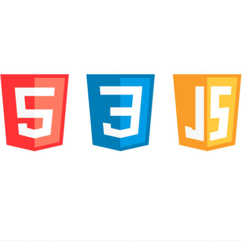
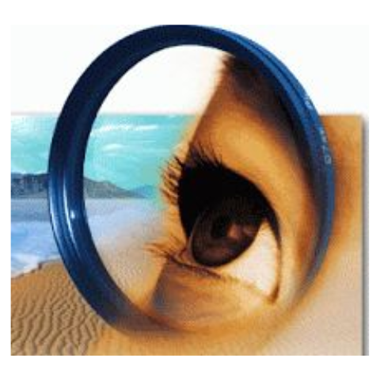

|
|
I completed my entire schooling from LKG to 12th grade at G.R.G Matriculation Higher Secondary School situated in Coimbatore, from 2003 to 2017. I secured 422/500 marks in 10th grade. I pursued the Computer with Arts course in 11th and 12th grades, securing 863/1200 in 12th grade. |
|
|
I received a scholarship at Adoro Institute of Multimedia in 2010 for securing an A grade in the aptitude test conducted by Indira Gandhi National Open University. I joined the institute and completed two levels of animation courses in 2010 and 2011. |
|
|
I joined Hindustan College of Arts and Science situated in Coimbatore in July 2018, choosing the B. Com CA course. Out of the three years of the course, I attended live campus classes and took semester exams in the first half. In the second half, due to the world pandemic coronavirus spread, I fully transitioned to online classes, which I couldn't attend as I didn't have the necessary online connectivity. In July 2021, I completed the course and graduated as a B.Com CA student. |
|
Data Management: |
Data Handling: |
Documentation: |
|
Video Editing: |
Project Management: |
Photo Editing: |
|
Photo Editing: |
Design Proficiency: |
Usage Proficiency: |
|
Coding: |
Content Creation: |
Website Hosting: |
|
Photo Editing: |

Web Development: |
Coding And Data Handling: |
|

2D Animation: |

Background Editing: |

Website Hosting: |
 I have always been known for my careful approach to planning and executing tasks. My methodical nature ensures that everything is perfectly organized and aligned for smooth execution, leaving no room for errors or oversights.
I have always been known for my careful approach to planning and executing tasks. My methodical nature ensures that everything is perfectly organized and aligned for smooth execution, leaving no room for errors or oversights.
 My creative and innovative thinking sets me apart in my approach to tasks and challenges. I believe in following my heart and allowing my creativity to guide me, resulting in unique and decorative executions that leave a lasting impact.
My creative and innovative thinking sets me apart in my approach to tasks and challenges. I believe in following my heart and allowing my creativity to guide me, resulting in unique and decorative executions that leave a lasting impact.
 I prefer to let my actions speak louder than words. I am a keen observer, choosing to listen and absorb information before speaking. This approach allows me to gain clarity and insight, ensuring that my contributions are thoughtful and meaningful.
I prefer to let my actions speak louder than words. I am a keen observer, choosing to listen and absorb information before speaking. This approach allows me to gain clarity and insight, ensuring that my contributions are thoughtful and meaningful.
 Biking and cycling are not just skills for me; they're my greatest passions. I learned to ride a cycle and a bike early on, and ever since, I've been fascinated to exploring new places, crossing boundaries, and immersing myself in different cultures and traditions. These activities have sparked my love for nature and connecting with people from various places. I find immense joy and fulfilment in biking and cycling, making them an integral part of my life.
Biking and cycling are not just skills for me; they're my greatest passions. I learned to ride a cycle and a bike early on, and ever since, I've been fascinated to exploring new places, crossing boundaries, and immersing myself in different cultures and traditions. These activities have sparked my love for nature and connecting with people from various places. I find immense joy and fulfilment in biking and cycling, making them an integral part of my life.
 Ever since I was young, I've loved taking stylish and attractive pictures of myself. As I grew up, I learned that being a fashion model is a real job. Even though I have a lot of responsibilities right now that keep me busy, my passion for creating beautiful images still burns bright.
Ever since I was young, I've loved taking stylish and attractive pictures of myself. As I grew up, I learned that being a fashion model is a real job. Even though I have a lot of responsibilities right now that keep me busy, my passion for creating beautiful images still burns bright.
Fashion modeling is all about showing off clothes and accessories in a cool and artistic way. It's like being a canvas for fashion designers to showcase their creations. While I may not be able to do it full-time yet, I would jump at the chance to be part of this exciting world someday.
 I've loved designing things since I was a kid, and that excitement still fuels me today. Whether it's for work or just for fun, I find joy in letting my creativity take shape and turning ideas into beautiful designs.
I've loved designing things since I was a kid, and that excitement still fuels me today. Whether it's for work or just for fun, I find joy in letting my creativity take shape and turning ideas into beautiful designs.
 Drawing has always been my favorite hobby since childhood. However, as I grew up and faced many changes in my life, I had to set it aside for a while. But my love for drawing has never faded, and it's something that I always keep alive in my mind. I believe that one day, when the time is right, I will return to it and rediscover the joy and passion I had for creating art.
Drawing has always been my favorite hobby since childhood. However, as I grew up and faced many changes in my life, I had to set it aside for a while. But my love for drawing has never faded, and it's something that I always keep alive in my mind. I believe that one day, when the time is right, I will return to it and rediscover the joy and passion I had for creating art.
 Photography and photo editing are both tasks that bring me immense joy and excitement. While they can be challenging and require a lot of focus to ensure perfection, I find that this level of concentration only adds to the thrill of the process.
Capturing a beautiful photograph or enhancing it through editing requires attention to detail and a keen eye for aesthetics. I enjoy the challenge of ensuring every aspect of the image is just right, from composition and lighting in photography to color correction and retouching in editing.
Photography and photo editing are both tasks that bring me immense joy and excitement. While they can be challenging and require a lot of focus to ensure perfection, I find that this level of concentration only adds to the thrill of the process.
Capturing a beautiful photograph or enhancing it through editing requires attention to detail and a keen eye for aesthetics. I enjoy the challenge of ensuring every aspect of the image is just right, from composition and lighting in photography to color correction and retouching in editing.
Despite the concentration required, the passion I have for photography makes every moment spent behind the camera or computer screen thrilling and fulfilling. It's a creative journey that allows me to express myself and create visual stories that resonate with others.
 I find both video making and acting incredibly exciting and fulfilling. Whether it's creating a short video for fun or producing a professional video for work, the process of storytelling through visuals always captivates me. I especially enjoy videography for short films or stylish videos, as they allow me to unleash my creativity and imagination.
I find both video making and acting incredibly exciting and fulfilling. Whether it's creating a short video for fun or producing a professional video for work, the process of storytelling through visuals always captivates me. I especially enjoy videography for short films or stylish videos, as they allow me to unleash my creativity and imagination.
Similarly, I have a deep-seated desire to become an actor one day. Many movies have inspired me, and after watching them, I can't help but envision myself on the big screen, making an impact on the hearts of those who watch. Acting is a form of art that allows me to step into different roles, explore emotions, and connect with audiences in a meaningful way. It's a dream I cherish, and I hope to pursue it someday to fulfill my passion for storytelling and performance.
 Similarly, I find video editing to be an exciting task. While I don't have professional experience in this field, I thoroughly enjoy editing stylish or travel videos that I shoot for personal use. It's a process that fuels my creativity and allows me to unleash the power of imagination. Whether it's adding effects, fine-tuning the visuals, or syncing audio, I relish the opportunity to enhance the overall storytelling experience through editing.
Similarly, I find video editing to be an exciting task. While I don't have professional experience in this field, I thoroughly enjoy editing stylish or travel videos that I shoot for personal use. It's a process that fuels my creativity and allows me to unleash the power of imagination. Whether it's adding effects, fine-tuning the visuals, or syncing audio, I relish the opportunity to enhance the overall storytelling experience through editing.
 I have a fondness for cooking that started when I used to assist my dad in preparing delicious dishes. Over time, I developed a keen interest and attraction for cooking skills. As I grew older, I learned to cook a variety of delicious dishes that I enjoy. This has become not just a skill but also a passion, reflecting my love for the art of cooking.
I have a fondness for cooking that started when I used to assist my dad in preparing delicious dishes. Over time, I developed a keen interest and attraction for cooking skills. As I grew older, I learned to cook a variety of delicious dishes that I enjoy. This has become not just a skill but also a passion, reflecting my love for the art of cooking.
 Although I’m not a developer, I know HTML and CSS and use AI for JavaScript, allowing me to create static websites. My passion for web design began in childhood, inspired by my father’s introduction of our company’s website. Designing static websites is one of my favorite skill, as it lets me be creative and decorative. The VISHNUPEDIA you’re viewing is my own creation, showcasing my ability to craft engaging and visually appealing designs. I enjoy the process of turning ideas into well-designed web pages.
Although I’m not a developer, I know HTML and CSS and use AI for JavaScript, allowing me to create static websites. My passion for web design began in childhood, inspired by my father’s introduction of our company’s website. Designing static websites is one of my favorite skill, as it lets me be creative and decorative. The VISHNUPEDIA you’re viewing is my own creation, showcasing my ability to craft engaging and visually appealing designs. I enjoy the process of turning ideas into well-designed web pages.
 My attraction with handling big data traces back to my childhood, where I observed my dad effortlessly managing our company's data to create insightful business summaries. His ability to simplify complex data attracted me, and I grew up admiring this skill.
As I ventured into my professional journey, I encountered various opportunities to handle diverse data sets, often in large volumes. These experiences fueled my excitement for working with data, especially in formats like Excel, Word, and TXT. I thrived on the challenge of organizing, analyzing, and presenting data in a meaningful and engaging manner.
My attraction with handling big data traces back to my childhood, where I observed my dad effortlessly managing our company's data to create insightful business summaries. His ability to simplify complex data attracted me, and I grew up admiring this skill.
As I ventured into my professional journey, I encountered various opportunities to handle diverse data sets, often in large volumes. These experiences fueled my excitement for working with data, especially in formats like Excel, Word, and TXT. I thrived on the challenge of organizing, analyzing, and presenting data in a meaningful and engaging manner.
What excites me the most is being able to assist others who may struggle with handling big data. The satisfaction of helping someone navigate through complex data sets and witnessing their relief and newfound confidence is truly priceless. I believe that continuous learning is key in this field, as data is constantly evolving and taking on new forms. This mindset keeps me motivated to explore innovative ways of handling and interpreting big data, ensuring that I remain adept at addressing diverse data challenges.
 One of the tasks that I find both satisfying and valuable in my professional experience is converting hard copy data into organized electronic formats. This process involves systematically sorting and organizing data to make it accessible and usable for various purposes.
While this task may not always be the most thrilling compared to other activities, there's a certain sense of accomplishment in transforming data into a structured and efficient format. The ability to take disparate pieces of information and arrange them in a way that facilitates easy access and retrieval is both challenging and rewarding.
One of the tasks that I find both satisfying and valuable in my professional experience is converting hard copy data into organized electronic formats. This process involves systematically sorting and organizing data to make it accessible and usable for various purposes.
While this task may not always be the most thrilling compared to other activities, there's a certain sense of accomplishment in transforming data into a structured and efficient format. The ability to take disparate pieces of information and arrange them in a way that facilitates easy access and retrieval is both challenging and rewarding.
I believe that the key to success in electronic data and document sorting lies in attention to detail and a logical approach. By ensuring that data is accurately categorized, labeled, and stored, we can create a streamlined system that enhances productivity and decision-making.
 In my professional experience, I have engaged in the task of analyzing medical documents for clients, particularly in the context of health insurance claims. While this may not be the most inherently enjoyable task, it holds immense importance in ensuring accuracy and efficiency in healthcare processes.
Medical document analysis involves carefully reviewing and extracting pertinent information from various medical records, reports, and related documents. The goal is to create professional documents that contain only essential information relevant to health insurance claims.
In my professional experience, I have engaged in the task of analyzing medical documents for clients, particularly in the context of health insurance claims. While this may not be the most inherently enjoyable task, it holds immense importance in ensuring accuracy and efficiency in healthcare processes.
Medical document analysis involves carefully reviewing and extracting pertinent information from various medical records, reports, and related documents. The goal is to create professional documents that contain only essential information relevant to health insurance claims.
While this task may not be perceived as "lovely" in the traditional sense, I find fulfillment in the precision and attention to detail required. Being able to distill complex medical information into clear and concise documents that aid clients in navigating health insurance procedures is a valuable contribution to their well-being.
 My passion for teaching stems from my early experiences with my father, who was an exceptional teacher. Growing up, I found traditional teaching methods in school to be uninspiring and boring. However, my dad's innovative and engaging approach made learning fun and easy to grasp.
My passion for teaching stems from my early experiences with my father, who was an exceptional teacher. Growing up, I found traditional teaching methods in school to be uninspiring and boring. However, my dad's innovative and engaging approach made learning fun and easy to grasp.
Inspired by his methods, I developed a love for teaching others in areas where I have clarity and understanding. I believe in making learning enjoyable and accessible, just like my dad did for me. I strive to break down complex concepts into simple, relatable terms and use creative techniques to engage those who may struggle to understand. Teaching isn't just about imparting knowledge; it's about igniting curiosity, fostering a love for learning, and empowering others to reach their full potential.
 For me, content writing is not just a task; it's an opportunity to create something that excites and mesmerizes the reader. Whether I'm writing for work or for personal projects, my goal is always to craft content that grabs attention and leaves a lasting impression.
I find huge joy in the process of writing, knowing that I have the power to make a topic attractive and engaging. From choosing the right words to structuring the content in a fascinating manner, every aspect of content creation is a chance to spark excitement in the reader.
For me, content writing is not just a task; it's an opportunity to create something that excites and mesmerizes the reader. Whether I'm writing for work or for personal projects, my goal is always to craft content that grabs attention and leaves a lasting impression.
I find huge joy in the process of writing, knowing that I have the power to make a topic attractive and engaging. From choosing the right words to structuring the content in a fascinating manner, every aspect of content creation is a chance to spark excitement in the reader.
Whether it's a blog post, an article, or marketing copy, I approach each piece with the mindset of creating something that not only informs but also entertains and inspires. The satisfaction of knowing that my writing has the ability to induce emotions and generate interest is what fuels my passion for content creation.
 My expertise in documentation encompasses creating user manuals, marketing materials, sales guides, and other types of user guides. Whether through videos, documents, images, or a combination of formats, I excel at crafting comprehensive resources that facilitate users understanding of products and services. This skill not only enhances the user experience but also reflects a company’s commitment to customer satisfaction.
My expertise in documentation encompasses creating user manuals, marketing materials, sales guides, and other types of user guides. Whether through videos, documents, images, or a combination of formats, I excel at crafting comprehensive resources that facilitate users understanding of products and services. This skill not only enhances the user experience but also reflects a company’s commitment to customer satisfaction.
I derive great satisfaction from transforming complex concepts into clear, actionable guidance. By simplifying instructions, developing step-by-step tutorials, and incorporating visual aids, I ensure that users can navigate challenges effectively and enjoy a seamless experience.
 I learned the art of business analysis and competitor analysis during one of my jobs, starting with little to no knowledge. It has been an exciting journey delving into this process, although it can also be challenging at times to grasp complex concepts.
I learned the art of business analysis and competitor analysis during one of my jobs, starting with little to no knowledge. It has been an exciting journey delving into this process, although it can also be challenging at times to grasp complex concepts.
Analyzing competitors and understanding our own strengths, pinpointing what sets us apart, and identifying areas for improvement to reach new heights are all thrilling aspects of this work. The process involves diving deep into data, trends, and market dynamics to make informed decisions and execute strategies effectively.
 Lead generation is a skill I acquired during one of my previous jobs, where the goal was to identify and gather potential clients for our company's products and services. This involved scouring the internet using platforms like websites and LinkedIn to build a substantial database of leads.
Lead generation is a skill I acquired during one of my previous jobs, where the goal was to identify and gather potential clients for our company's products and services. This involved scouring the internet using platforms like websites and LinkedIn to build a substantial database of leads.
Once we had a comprehensive list, we would then run email campaigns targeted towards converting these leads into actual clients. It's a process that requires strategic thinking, data analysis, and effective communication to nurture and convert leads into valuable business opportunities.
 I gained valuable skills in quality analysis through my work experience, where I collaborated closely with the quality assurance team to assess our web-based tool. This involved identifying bugs, logical errors, and inconsistencies in the product's features.
I gained valuable skills in quality analysis through my work experience, where I collaborated closely with the quality assurance team to assess our web-based tool. This involved identifying bugs, logical errors, and inconsistencies in the product's features.
In addition to technical analysis, I also validated the product from an end-user perspective, providing insights on areas that could be enhanced for user comfort and satisfaction. This hands-on experience taught me the importance of thorough quality analysis and user-centric design in delivering high-quality products.
 I acquired the skill of product analysis through my job experience, particularly by conducting competitor analysis. This process allowed us to pinpoint areas for improvement, ensuring our products were user-friendly, intuitive, and free of unnecessary complexities. The goal was to enhance our market reach and gain the goodwill of our clients by offering product that met their needs effectively. This experience taught me the importance of continuous evolution and refinement to stay competitive and customer-centric in the market.
I acquired the skill of product analysis through my job experience, particularly by conducting competitor analysis. This process allowed us to pinpoint areas for improvement, ensuring our products were user-friendly, intuitive, and free of unnecessary complexities. The goal was to enhance our market reach and gain the goodwill of our clients by offering product that met their needs effectively. This experience taught me the importance of continuous evolution and refinement to stay competitive and customer-centric in the market.